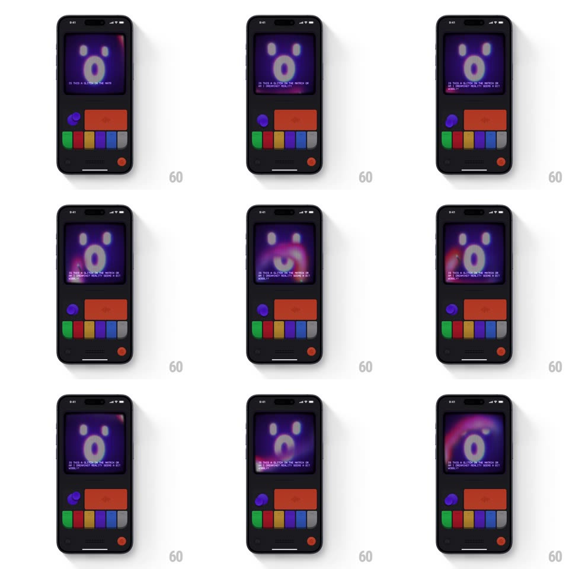

Media
Frame-by-frame

Rebuild this interaction 1:1: Mist's knob - rotating the small round knob on the dark retro console warps the CRT mascot face in real time: the resting red smiley dissolves through RGB-split glitch frames into a purple wide-eyed "O" face, with glitch copy typing out below it.

Rebuild this interaction 1:1: Mist's knob - rotating the small round knob on the dark retro console warps the CRT mascot face in real time: the resting red smiley dissolves through RGB-split glitch frames into a purple wide-eyed "O" face, with glitch copy typing out below it. ## Integration Integration: stack-agnostic spec - springs given as stiffness/damping, timed motions as duration + curve; map every value to your framework and animation library of choice. ## Scene Dark handheld console body: scanline CRT screen showing a large pixel face, below it the control cluster - purple round knob (with indicator mark), wide red button, a row of colored pill keys (green, red, yellow, blue, grey), red power dot. ## Motion spec Pattern: direct-manipulation knob with glitch morph. - Rotate the knob: the face deforms 1:1 with the knob angle - pixels smear horizontally, the RGB channels split (up to 4px fringe), and the face slides between states like tuning an analog TV. - Mid-rotation, the screen passes through static frames: horizontal displacement bands jump (translateX +/-12px in 3-5 strips, 1-2 frames each). - Land the rotation: the new face state (purple, wide oval eyes, gaping "O" mouth) locks in with one final shake frame (translate jitter +/-5px, 100ms) and a luminance pop. - The knob itself rotates under the finger with slight detents (snap every 15deg, 40ms) and a haptic tick per detent. - Glitch text types out under the face character by character (30ms/char, monospace, blinking block cursor): "IS THIS A GLITCH IN THE MATRIX OR AM I DREAMING? REALITY SEEMS A BIT WOBBLY". ## Calibration - The RGB split scales with rotation speed, not just position - fast spins fringe harder. - The scanline texture desyncs from the face during smears - the glitch detail that sells it. ## Reduced motion Face snaps between states without smears or channel split. ## Don't miss - The face color shifts from warm red to cool purple across the knob's travel - hue is part of the state. - The typed text starts only after the face locks, not during the spin.